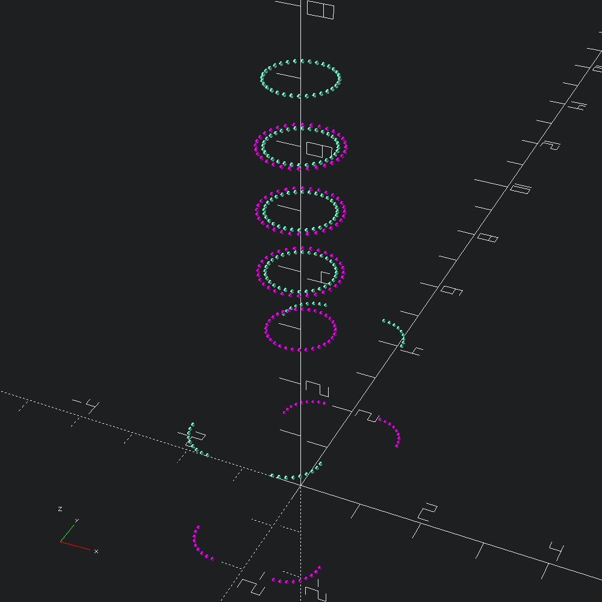
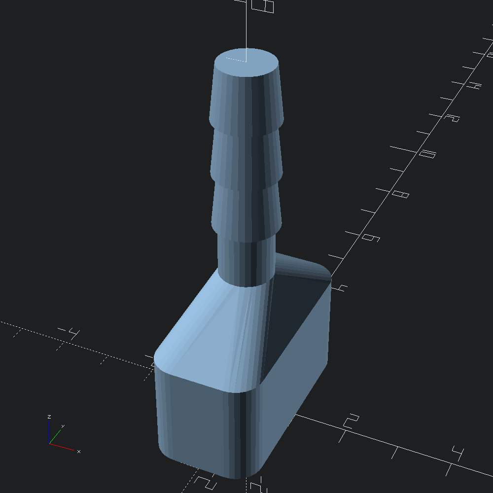

open OCADml
open OSCADmlThe Mesh.skin function makes it (relatively) simple to generate meshes that cover over series of profiles. A greate simple example demonstrated by the skin modules in both list-comprehension-demos and BOSL2 is the vaccum connector.
let profiles =
let fn = 32
and up h = Path3.translate (v3 0. 0. h) in
let base =
let sq = Path3.square ~center:true (v2 2. 4.) in
Path3.(roundover ~fn (Round.flat ~corner:(Round.circ (`Radius 0.5)) sq))
and c r h = up h @@ Path3.circle ~fn r in
let cones = List.map (fun h -> [ c 0.6 h; c 0.5 (h +. 1.) ]) [ 4.; 5.; 6. ] in
List.flatten @@ ([ base; up 2. base; c 0.5 3.; c 0.5 4. ] :: cones)A quick look at the points of our profiles we are about to mesh over with alternating colours may help a bit to conceptualize what we are about to give Mesh.skin to work with.
let () =
let show i =
let c = if i mod 2 = 0 then Color.Magenta else Color.Aquamarine in
Debug.show_path3 (fun _ -> Scad.(color c @@ sphere 0.03))
in
List.mapi show profiles |> Scad.union |> Scad.to_file "vaccum_connector_points.scad"
let () =
Mesh.skin ~slices:(`Flat 0) profiles
|> Scad.of_mesh
|> Scad.to_file "vaccum_connector.scad"
let () =
Mesh.skin
~refine:2
~slices:(`Flat 25)
~mapping:(`Flat `Tangent)
Path3.[ circle ~fn:5 4.; translate (v3 0. 0. 3.) @@ circle ~fn:80 2. ]
|> Scad.of_mesh
|> Scad.to_file "tangent_skin_test.scad"